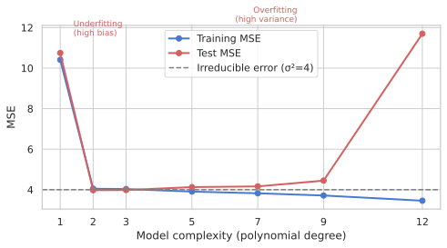
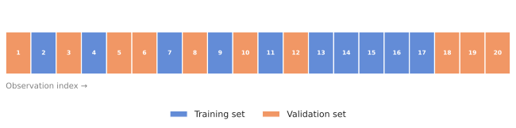
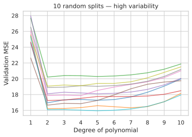
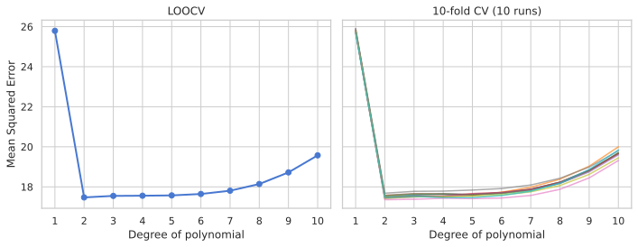
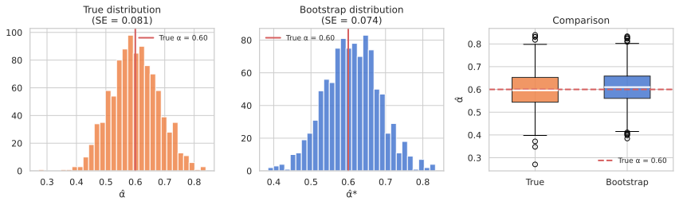
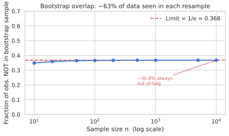

Estimating test error via hold-out sets, K-fold CV, LOOCV, and the bootstrap
Roadmap
Where we are heading
Part 1 · 0:00–0:30
Why training error lies
The overfitting gap, validation sets, and their drawbacks.
Part 2 · 0:30–1:15
Cross-validation
K-fold, LOOCV, the right vs wrong way.
Part 3 · 1:15–1:45
The Bootstrap
SE estimation, confidence intervals, and limits.
Cross-validation and the bootstrap are the two most important tools for assessing statistical learning methods. Everything downstream — model selection, hyperparameter tuning, uncertainty quantification — rests on these ideas.
Part 1 · 0:00 – 0:30
Why Training Error Lies
The gap between training and test performance
Training error vs test error
Test error: average loss on new observations not used to train the model.
Training error: loss on the data the model was fitted on — always optimistic.
More flexibility → training error always falls, test error forms a U-shape.

How to estimate test error
Best: a large designated test set — often not available.
Mathematical adjustment: Cp, AIC, BIC — penalise training error for complexity.
Resampling (our focus): hold out a subset, fit on the rest, evaluate on held-out. Model-agnostic.
The validation-set approach

Randomly split into training set and validation (hold-out) set.
Fit on training only. Evaluate on validation → estimates test error.
Drawback 1: high variance — result depends on which observations fall in each half.
Drawback 2: overestimates test error — only n/2 observations train the model.
Drawbacks of the validation set
10 different random splits → 10 different MSE curves (right).
Even the best degree changes across splits.
Neither the curve shape nor the minimum is reliable.

Training error vs test error — see it
True function: y = 1 + 2x − x² + noise. We fit polynomials of degree 1–12. Training MSE always falls; test MSE bottoms at degree 2 (the true degree) and rises again — the classic U-shape.
Validation-set approach — single split vs. multiple splits
Auto dataset: predict mpg from horsepower using polynomial regression. Left: one 50/50 split looks clean. Right: 10 different splits give wildly different curves — the high variance problem.
Part 2 · 0:30 – 1:15
Cross-Validation
K-fold, LOOCV, the right and wrong way
K-fold cross-validation
Divide data into K equal parts C₁, C₂, …, CK.
Leave out part k. Fit on the other K−1 parts. Predict on part k.
CV(K) = Σ (nk/n) · MSEk — every observation is held out exactly once.
Fold
Part 1
Part 2
Part 3
Part 4
Part 5
1
Valid.
Train
Train
Train
Train
2
Train
Valid.
Train
Train
Train
3
Train
Train
Valid.
Train
Train
4
Train
Train
Train
Valid.
Train
5
Train
Train
Train
Train
Valid.
LOOCV — a nice shortcut for OLS
For least-squares, LOOCV can be computed from a single fit:
CV(n) = (1/n) Σ [(yᵢ − ŷᵢ) / (1 − hᵢ)]²
hᵢ = leverage — diagonal of the hat matrix H = X(XᵀX)⁻¹Xᵀ.
One model fit → LOOCV for free. No K refits needed.
LOOCV vs K = 5 or 10
LOOCV is nearly unbiased — trains on n−1 observations.
But high variance: K=n estimates are highly correlated.
K = 5 or 10 balances bias and variance.
Practical rule: use K = 10.

CV: the right and wrong way
Wrong:
Step 1: select top-100 features by correlation with labels (ALL data).
Step 2: apply CV to classifier on those 100 features.
→ CV error ≈ 0%, true error = 50%.
Right:
CV folds wrap ALL steps including feature selection.
Inside each fold: select from training fold only.
→ CV error ≈ 50% — honest.
In scikit-learn: use Pipeline — it enforces this automatically.
K-fold CV with sklearn — cross_val_score
cross_val_score returns negative MSE by convention (sklearn: higher = better). Negate it to get the real MSE. Compare 5-fold vs 10-fold on Auto data.
Manual K-fold — the formula in action
Implement CV(K) = Σ (nk/n) · MSEk by hand using KFold. Cross-check against cross_val_score to verify they match.
LOOCV shortcut for OLS — one fit, same result
The leverage formula computes LOOCV from a single OLS fit. Verify it matches running 392 actual refits via LeaveOneOut.
CV for classification + GridSearchCV
10-fold CV error and estimated SE on Iris (3-class LogisticRegression). Then GridSearchCV selects the best K in KNN — the same CV idea, automated.
Data leakage — wrong vs right way
5000 noise features, 50 samples, random binary labels. The wrong way selects features BEFORE the CV loop — it peeks at all labels. The Pipeline forces feature selection inside each fold — honest.
Exercise 1 — Single split vs 10-fold CV on Penguins
Predict penguin species from bill_length_mm and bill_depth_mm with LogisticRegression (scaled). Store the 70/30 test accuracy in split_acc and the 10-fold CV accuracy in cv_acc.
Exercise 2 — CV MSE vs degree for K ∈ {2, 5, 10, LOOCV}
Using the Auto dataset, plot CV MSE vs polynomial degree (1–10) for four values of K on the same axes. Store your results as a dict cv_results mapping label → list of MSE values (one per degree).
Exercise 3 — Reproduce the leakage demo (averaged over 10 runs)
Generate 5000 noise features, 50 samples, random binary labels. Run both the wrong way (feature selection outside CV) and the right way (Pipeline) 10 times each. Store average errors in wrong_err and right_err.
Part 3 · 1:15 – 1:45
The Bootstrap
Quantifying uncertainty by resampling
What is the bootstrap?
Quantify uncertainty of any estimator without needing new data.
Treat the observed sample as a stand-in for the population: resample with replacement.
Each bootstrap dataset Z*ᵇ has n observations, same size as original — some repeated, some absent.
Compute your statistic on each Z*ᵇ. The spread of these B estimates approximates SE.
The investment example
Invest α in X and 1−α in Y to minimise portfolio variance:
With real data: plug in sample estimates → get α̂. How accurate is α̂?
No analytical formula for SE(α̂) — perfect use case for bootstrap.
Bootstrap standard error and CI
SEB(α̂) = √[ 1/(B−1) Σ (α̂*ʳ − ᾱ*)² ]
Investment: SEB(α̂) ≈ 0.087, true SE = 0.083.
B = 1000 resamples is typically enough.
Percentile CI: 5th and 95th percentiles of the B estimates → 90% CI.

Bootstrap is NOT for prediction error
Each bootstrap sample contains ~63.2% of the original observations.
Testing on the full dataset after training on a bootstrap sample → model saw most of the test set.
Result: severely underestimates test error.
Use CV for prediction error. Use bootstrap for SE and CI.

Bootstrap SE — investment example
Simulate 1000 datasets from the true population to get the real SE(α̂). Then bootstrap from ONE dataset. Compare — bootstrap approximates the truth remarkably well.
Bootstrap SE for regression coefficients
Bootstrap SE of OLS coefficients on the Diabetes dataset. Compare to the analytical OLS formula (which only works for linear regression). Bootstrap works for any model.
scipy.stats.bootstrap — the modern API
scipy.stats.bootstrap computes CI for any statistic. Here: 95% CI for the median flipper length of penguins. Compare percentile vs BCa (bias-corrected accelerated) methods.
Why bootstrap underestimates prediction error
~63% of observations appear in each bootstrap sample. Training on a bootstrap sample and testing on the original dataset is not a fair test — the model saw most of the "test" data during training.
Exercise 4 — Bootstrap CI for median flipper length
Use scipy.stats.bootstrap to compute a 95% CI for the median of penguin flipper length. Store the percentile CI as a tuple ci_pct = (low, high). Also try the BCa method.
Recap
Three things to leave with
Cross-validate everything — including preprocessing. Use sklearn's Pipeline so feature selection and scaling happen inside each fold, not outside.
K = 5 or 10 is the practical default. LOOCV is nearly unbiased but has high variance and is slow; K=10 finds the same minimum with far less computation.
Bootstrap gives SE and CI for any estimator. Use scipy.stats.bootstrap; avoid using bootstrap for prediction error — use CV instead.
Next: Classification — when Y is categorical. The same ideas of regularisation and model selection reappear, now with logistic loss.